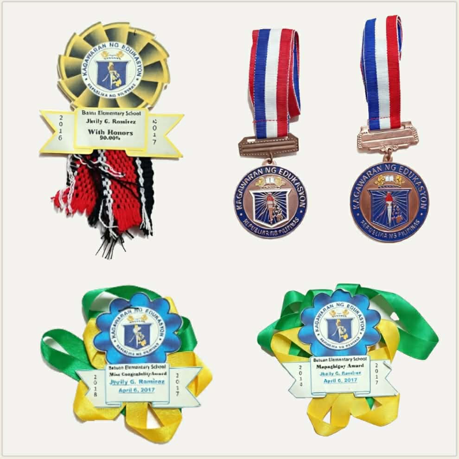

RAMIREZ, JHEILY G.
BSIT : Net Security
A little about me
Hello, I’m RAMIREZ, JHEILY G. — I am a dedicated student with a passion for learning, exploring creative ideas, and growing both academically and personally. I value teamwork, attention to detail, and continuous improvement. I strive to turn challenges into opportunities to build new skills and create meaningful work.
BSIT : Net Security
The person behind the page
01 / 04A dedicated student with a passion for learning, creativity, and personal growth.
18 years old
June 10, 2008
“What is beauty if your devotion to God is empty.”
Editing, painting, and journaling
#49 City Camp Central, Baguio City
Batuan Elementary School
2014–2020Tuba National High School
2021–2026University of the Cordilleras
2026–onwardsA few things I love to do
I find joy in weaving raw moments into meaningful stories through photo and video editing. It teaches me to observe subtle details, balance elements, and craft purposeful visuals — precision I carry into my IT journey.
Painting is my quiet sanctuary. Each stroke calls for patience, careful planning, and an open imagination. It trains my eyes to see beyond the surface and embrace the beauty of the process as much as the finished work.
Journaling is where my heart finds its voice. It is my space to reflect, untangle my thoughts, trace my growth, and anchor myself in my faith and core values as I move forward each day.
Little wins, big lessons
02 / 04“The journey wouldn't end here, but it marks a new beginning and I am stepping boldly into what comes next.”
Certificates and honors that reflect discipline, perseverance, and the years I invested in learning.

Recognition for my service, leadership, creativity, and participation beyond the classroom.

My favorite kind of company
03 / 04Stories about my family and friends are on the way.
Thanks for stopping by.